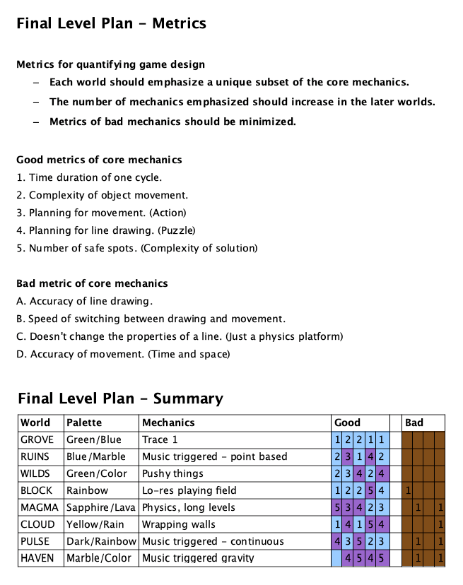

Learning from the differences in level design processes between Trace 1 & 2
In 2013 Bovinedragon Software released our third and final game, Trace 2. It was a sequel to our debut game and we thought there was a lot more we could do with the concept so it deserved a second look. My role in development was 'everything except programming', and this article will cover some of the work I did in level design.
This is an effort to capture my most valuable takeaway from developing Trace 2, which had to do with differences in level design between the two games in the series and what the results were. Hopefully it also serves as an interesting look into what went on behind the scenes. Although both games share the same idea with different mechanics, the approaches to level design were very different. Trace 2's level design was a concentrated team effort that took months of work, meetings, decisions, and involved carefully crafted rules, metrics, and quality control. Trace 1's level design was more similar to a gamejam. Everything was done on the fly in a few days with minimal iteration and only our life experience in gaming to guide our decisions. The results of this were interesting and showed that meticulous planning can result in diminishing returns.
Trace 2 - Micro
First, let's look at the level design process for Trace 2 and go through its rules from the most basic standpoint. These rules were standalone; you didn't need to check any content outside the level to figure out if it passed or not.
Most of what made Trace 2 levels non-linear puzzles came from rule #1: every level must have at least two intended paths, with one being simple and another being more difficult but faster. To further increase the skill ceiling, designing around speedrun movement exploits was allowed on the more difficult paths.
Next we had some QoL (quality of life) rules. Levels could not require overly precise drawing, fast switching between drawing and player movement, or use of the 'respawn at start' button. These also ensured that the level design was better by ruling out potentially unintuitive design choices.
To make sure the 'respawn at start' button was safe to use, the player's starting position had to always remain safe from enemies. And to make sure the base state of the level never changed, erasing lines could not be part of an intended solution and all enemy paths had to operate on a cycle. There were a few enemies in Trace 1 that you could effectively despawn by waiting 30 seconds before leaving the starting position.
Another mistake from Trace 1 was that some levels had precise windows in their enemy movement cycles that you had to pinpoint to reach the goal safely. Because enemy movements were often unsynced from each other, some of these levels would take minutes for their cycle to fully repeat. This led to boring non-gameplay if the player missed the cycle and had to wait for the next opportunity. In Trace 2 the level state had to be limited to one short cycle.
In the final world of Trace 1, I included a bunch of UFO enemies with bizarre, unpredictable movement paths. After playtesting, these enemies were lacking in difficulty so I cranked all their movement speeds way up beyond the standards set by the rest of the game. In hindsight these fast, unpredictable enemies were unfair to the player so all enemies in Trace 2 needed to have clearly predictable geometry in their movement paths.
And finally, no exceptions to the rules! Even if it was a boring tutorial level or a boss level with unique mechanics.
Trace 2 - Device Support
In addition to all the basic gameplay rules we had to make the levels compatible with multiple screen sizes. The iPhone 5S was the newest device at the time and we also wanted to support older devices back to the 3GS, plus iPads. Usually this is can be solved by respacing the UI per-device but Trace 2 was a game where level design is a direct function of screen size. We needed a solution that didn't involve creating three different versions of every level.
There were three aspect ratios to deal with: the 5/5S had extra pixels on the X axis, the iPads had extra pixels on the Y axis, and the 3GS/4/4S had neither of those. To keep everything on one version we decided to make the 3GS the 'base' aspect ratio and place filler objects in the margins on the other devices. These objects couldn't affect gameplay whatsoever and the level also had to look 'correct' without the filler objects for the 3GS version. After marking some extra space for these margins in our level editor, all we had to do was keep these constraints in mind while building levels and no further effort was needed.
Trace 2 - Macro
Next we're going to look at design rules on the larger scale, and the process we used to create levels. We first set up metrics for each world that represented content intensity levels in various categories. The difficulty scaled from 1-5 and we generally alternated between 'Actiony' and 'Puzzley' worlds while slowly increasing the difficulty as the game progressed.
Worlds were also designed with new gameplay mechanics that would be mostly exclusive to each one. Showcasing these efficiently was important because we only had 20 levels to do everything we wanted to. These mechanics also tied in with the overall world difficulty ratings; we started with simple gimmicks and ramped it up as the game went on.
The level design process began in GIMP (an open source alternative to Photoshop) where we set up an empty 4x5 grid to arrange our 20 levels in. Some of these slots also had specific goals to achieve, such as tutorials, tests of what you've learned in a tutorial, boss levels, or fun exception levels that would intentionally not follow our metrics.
Each day I would work on creating three 'level packs'. A level pack consisted of five potential levels for one world, drawn freehand into GIMP through a tablet. The priority here was level structure; terrain and sprite details were all abstracted into stick figure quality so that we could get our ideas down as fast as possible.
Near the end of the day our team met up for around five minutes to discuss the new level packs. We rejected any levels that broke the rules, didn't fit the current needs of our world grid, or just didn't seem good enough. Usually we'd decide to keep 2-3 levels per pack which I'd then copy-paste into our grid in their stick figure state. This repeated week after week until we had all 160 levels (8 sets of 20) planned out.
As time went on I began designing the level packs more intentionally to fit the blank spaces on the world grid that remained. The goals would be something like: 'Today I'm going to design something for this world's second tutorial, three generic actiony levels, and one puzzly exception level'.
While that was going on I also began drawing sprites for some of the worlds that were closer to completion. Each world had a varied set of enemy sprites and a themed set of terrain sprites. After the sprites were finished, placed into a level file, and hitboxed, the level file would get passed on to our engineer for AI scripting. I had covered this last step myself in Trace 1, but that game used simple point-to-point movement instead of full scripting support and I didn't fully learn to code until a few months after Trace 2 was released.
Some levels had changes made at later stages to account for sprite reuse, better level design, changes to other levels in our world grid, or lack of fun in playtesting. But for the most part our process was successful and minimized creation of unused content.

Trace 1
Now that we've gone through all of that, let's look at the process for Trace 1. And it really was just a process; there were no rules, metrics, guidelines, or any pre-planning beyond the six world themes we had decided on. Due to the simpler nature of the game engine everything from art to enemy movements to beta testing could be done within our custom editor. Unlike our later games, the level design workload on Trace 1 was split up 50/50 between myself and our engineer so this recollection is only from my half.
First I would open up the editor and create a blank file for level #1 of a world. After planning for a few minutes, I began drawing the levels' terrain and enemies by hand using a mouse. The enemies were given hitboxes, paths, and movement speeds, and the player avatar was assigned a starting position. Then I'd hit the 'Play' button and playtest it with mouse and keyboard. After making sure everything worked as intended I'd save the file and create a new one for level #2. And that's it. On an average day I was able to build an entire 20 level world in one six hour sitting, from idea creation to shippable code in one pass.
Very few levels were changed after being made. Level 6-13 had a giant buzzsaw that moved too fast to avoid and the handful of levels with painted backgrounds needed manual code optimization to reduce lag, but those are the only bugs I can remember at this point.
As an interesting side note, World 6 was given extra care because it was the big finale and I wanted it to be the highlight of the game. I made a rough plan of the terrain layout on paper before getting started. Although it had a higher standard of ingame detail and an even more detailed ending, it still only took two working sessions to produce all 20 levels.
Conclusion
Looking back at both games with a few years perspective, I think that while Trace 2's levels were better designed it was only ahead by a little bit. Making a rough estimate for the number of manhours we spent, my conclusion was that Trace 2's level design wasn't 20 times better even though we spent 20 times longer on it. So was it worth it? I don't regret the time spent but I'd also want to dial back some of this perfectionism if we ever made another one. And there's something really endearing about the idea of building a game basically via stream of consciousness that I'd enjoy revisiting.
Afterword
I had an opportunity to test a part of this theory in 2017 when writing the soundtrack for a newer game, Transcend. I wanted to create a full soundtrack for it but at the time I couldn't justify spending three months on music. Since it was an abstract atmospheric game I decided to test out a principle of 'maximum results, minimum effort', and just see what happens. So I wrote huge slow-moving chord progressions, tiny sparkly arpeggios looped for three minutes, used premade drumbeats and soundscapes which I normally consider 'cheating', and then threw a few sound effects on top of everything. The results confirmed the theory; it still came out to be a really good soundtrack and one that I consider good enough to showcase and listen to for fun.